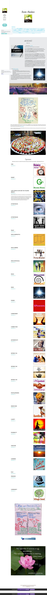

Become Abundance on Strikingly
There's three games that you can play in any circumstances:
One is the I win-you lose game. This is the most common game played on the Planet. It is based on competition. If someone else wins, then I have to lose and vice versa. It is based on scarcity - that there is not enough of whatever the game is about. People play win-lose games about love, attention, money, job position, territory, land, religious faith, friendship, time etc ...
Another game invented in the 1960's is the win-win game. This game is based on cooperation and compromise. If you do this, then I do that and we both win a little. Often this game is rapidly turned into a lose-lose game. If you are willing to give this up, then I will give that up. For example, in a relationship one partner might say_: "If you tell your mother not to come for Christmas, then I won't go out with my friends and stay at home with you"._ This is still a scarcity-based game, when there's not enough of Possibility for everybody to get what they want.
The Winning Happening game was created by Possibility Managers to describe their experience of Possibility Management spaces. In those spaces, there is no more 'I' or 'You'. The winning is not personal, it is for the whole group at large and also beyond the group, it is winning happening for the whole morphogenetic field of the Earth that's being upgraded because a few individuals somewhere are upgrading theirs.
Winning Happening is based on abundance of resources. There is so much resource that the only way to use it is to give it away as fast as possible, for the next batch of resource to be able to come through.